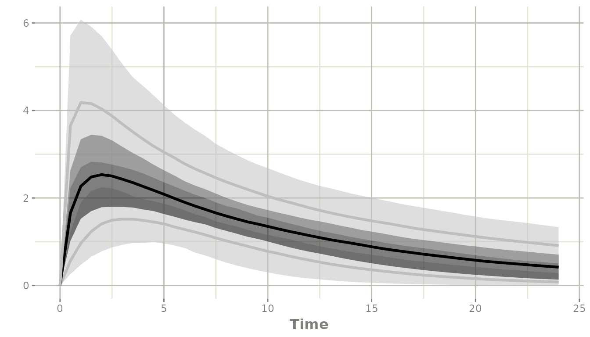

Summarizing simulations with confint()
Source:vignettes/articles/rxode2-confint.Rmd
rxode2-confint.Rmd
library(rxode2)
#> rxode2 5.1.7 using 2 threads (see ?getRxThreads)
#> no cache: create with `rxCreateCache()`
library(ggplot2)confint() turns a solved rxode2 object into
the percentiles of the simulated values at each time, and – when the
simulation can support it – a confidence band around each of those
percentiles. This article covers what it returns, which arguments
control it, and why the returned columns change with the size and
structure of the simulation.
A model to summarize
pkModel <- function() {
ini({
tka <- log(1.57)
tcl <- log(2.72)
tv <- log(31.07)
eta.ka ~ 0.6
eta.cl ~ 0.09
eta.v ~ 0.1
add.sd <- 0.7
})
model({
ka <- exp(tka + eta.ka)
cl <- exp(tcl + eta.cl)
v <- exp(tv + eta.v)
d/dt(depot) <- -ka * depot
d/dt(center) <- ka * depot - cl / v * center
cp <- center / v
cp ~ add(add.sd)
})
}
## uncertainty in the fixed effects, as it would come from the
## covariance step of an estimation run
thetaVcov <- lotri::lotri({
tka ~ 0.04
tcl ~ c(0.01, 0.02)
tv ~ 0.03
})
ev <- et(amt = 100, time = 0) |>
et(seq(0, 24, by = 0.5))Two levels of summary, and two shapes of output
There are two different things you may want from a simulation:
the percentiles of the population: at each time, the 2.5th, 50th and 97.5th percentile of the simulated individuals. This describes the spread of the individuals.
a confidence band around each of those percentiles: how well each percentile itself is known. This describes the uncertainty in the summary, and it is what the shaded ribbons of a visual predictive check show.
confint() returns the first as a
rxSolveConfint1 object, with the percentile in
p1 and its value in eff, and the second as a
rxSolveConfint2 object, with the percentile in
p1 and its band in the p2.5, p50
and p97.5 columns.
level sets the population percentiles. ci
sets the width of the band placed around them, and defaults to
level:
## 90% of the individuals, with a 95% band around each of those three curves
confint(sim, "cp", level = 0.90, ci = 0.95)Where the band comes from
The band needs replicate estimates of the percentile.
confint() gets them in one of two ways, and this is what
decides which of the two shapes you get back.
nStud > 1: replicate studies
This is the case the band is really meant for. With
thetaMat and nStud, each study is a separate
draw of the fixed effects, so the percentiles are computed within each
study and the band is the quantile of those study-level percentiles. The
band then reflects the parameter uncertainty, which is usually what is
wanted.
rxSetSeed(42)
simStud <- rxSolve(
pkModel,
ev,
thetaMat = thetaVcov, # uncertainty in the thetas
nStud = 500, # virtual studies (one parameter draw each)
nSub = 20 # subjects per study
)
#> ℹ parameter labels from comments are typically ignored in non-interactive mode
#> ℹ Need to run with the source intact to parse comments
#> [====|====|====|====|====|====|====|====|====|====] 0:00:00
ciStud <- confint(simStud, "cp", level = 0.95)
#> ℹ this simulation drew from 'thetaMat', so the simulated values include parameter uncertainty
#> summarizing data...done
class(ciStud)[1]
#> [1] "rxSolveConfint2"
head(ciStud)
#> # A tibble: 6 × 7
#> p1 time trt p2.5 p50 p97.5 Percentile
#> <dbl> <dbl> <fct> <dbl> <dbl> <dbl> <fct>
#> 1 0.0250 0 cp 0 0 0 2.5%
#> 2 0.5 0 cp 0 0 0 50%
#> 3 0.975 0 cp 0 0 0 97.5%
#> 4 0.0250 0.5 cp 0.261 0.564 1.22 2.5%
#> 5 0.5 0.5 cp 1.02 1.66 2.63 50%
#> 6 0.975 0.5 cp 2.23 3.65 5.71 97.5%
plot(ciStud)
#> Warning: `aes_string()` was deprecated in ggplot2 3.0.0.
#> ℹ Please use tidy evaluation idioms with `aes()`.
#> ℹ See also `vignette("ggplot2-in-packages")` for more information.
#> ℹ The deprecated feature was likely used in the rxode2 package.
#> Please report the issue at <https://github.com/nlmixr2/rxode2/issues/>.
#> This warning is displayed once per session.
#> Call `lifecycle::last_lifecycle_warnings()` to see where this warning was
#> generated.
The solid line is the median individual, the ribbon around it is the 95% confidence band on that median, and the outer ribbons are the same band on the 2.5th and 97.5th percentiles.
Note that nSub = 20 subjects per study is not a
problem here: the band comes from the 500 studies, not from the 20
subjects.
One study of at least 2500 individuals: sub-sampling
With a single study there are no replicates to work with, so
confint() makes some: the individuals are split into
round(sqrt(n)) equal sub-samples, the percentiles are
computed in each, and the band is the quantile across sub-samples. This
is the sampling variability of the percentile estimate itself, and it
does not include any parameter uncertainty.
confint() only does this when there are at least 2500
individuals, which is the point at which the sub-samples are large
enough (sqrt(2500) = 50 sub-samples of 50) for their
percentiles to mean something.
rxSetSeed(42)
simBig <- rxSolve(pkModel, ev, nSub = 2500)
ciBig <- confint(simBig, "cp", level = 0.95)
class(ciBig)[1]
#> [1] "rxSolveConfint2"
head(ciBig)
#> # A tibble: 6 × 7
#> p1 time trt p2.5 p50 p97.5 Percentile
#> <dbl> <dbl> <fct> <dbl> <dbl> <dbl> <fct>
#> 1 0.0250 0 cp 0 0 0 2.5%
#> 2 0.5 0 cp 0 0 0 50%
#> 3 0.975 0 cp 0 0 0 97.5%
#> 4 0.0250 0.5 cp 0.303 0.526 0.790 2.5%
#> 5 0.5 0.5 cp 1.36 1.66 1.99 50%
#> 6 0.975 0.5 cp 3.12 3.90 4.60 97.5%Below 2500 individuals there is nothing to build a band from, so
confint() says so and returns the percentiles alone:
rxSetSeed(42)
simSmall <- rxSolve(pkModel, ev, nSub = 2400)
ciSmall <- confint(simSmall, "cp", level = 0.95)
#> ! in order to put confidence bands around the intervals, you need at least 2500 simulations
#> summarizing data...done
class(ciSmall)[1]
#> [1] "rxSolveConfint1"
head(ciSmall)
#> # A tibble: 6 × 5
#> time trt p1 eff Percentile
#> <dbl> <fct> <dbl> <dbl> <chr>
#> 1 0 cp 0.0250 0 2.5%
#> 2 0 cp 0.5 0 50%
#> 3 0 cp 0.975 0 97.5%
#> 4 0.5 cp 0.0250 0.451 2.5%
#> 5 0.5 cp 0.5 1.64 50%
#> 6 0.5 cp 0.975 4.34 97.5%This is the one surprising part of the interface: the same
confint() call returns different columns for
nSub = 2400 and nSub = 2500. The
threshold is a property of the simulation, not of the call.
Asking for the percentiles only
If you want the simple percentiles regardless of how large the
simulation is – for instance because downstream code expects fixed
column names – pass ci = FALSE:
ciNone <- confint(simBig, "cp", level = 0.95, ci = FALSE)
class(ciNone)[1]
#> [1] "rxSolveConfint1"
head(ciNone)
#> # A tibble: 6 × 5
#> time trt p1 eff Percentile
#> <dbl> <fct> <dbl> <dbl> <chr>
#> 1 0 cp 0.0250 0 2.5%
#> 2 0 cp 0.5 0 50%
#> 3 0 cp 0.975 0 97.5%
#> 4 0.5 cp 0.0250 0.459 2.5%
#> 5 0.5 cp 0.5 1.66 50%
#> 6 0.5 cp 0.975 4.11 97.5%ci = FALSE also pools across studies when there are
several, so it gives the percentiles of all nStud * nSub
simulated individuals together.
confint() tells you whether thetaMat was
used
A thetaMat passed to rxSolve() is only
drawn from when the variability is actually being simulated – that is,
when nStud > 1, or when
simVariability = TRUE forces it. With
nStud = 1 it is silently ignored, so a summary of that
solve carries no parameter uncertainty no matter how many individuals it
has.
confint() says which of the two happened while it builds
the summary:
ciStud <- confint(simStud, "cp", level = 0.95)
#> ℹ this simulation drew from 'thetaMat', so the simulated values include parameter uncertainty
#> summarizing data...done
rxSetSeed(42)
simIgnored <- rxSolve(pkModel, ev, thetaMat = thetaVcov,
nStud = 1, nSub = 2500)
#> Warning: 'thetaMat' is ignored since nStud <= 1
#> use 'simVariability = TRUE' to override.
ciIgnored <- confint(simIgnored, "cp", level = 0.95)
#> ! this simulation did not draw from 'thetaMat' ('nStud' <= 1), so the simulated values do not include parameter uncertainty; use 'nStud' > 1 or 'simVariability=TRUE'
#> summarizing data...doneNothing is said when the solve had no thetaMat at
all.
The message describes the simulated values, not the band. A
solve can carry parameter uncertainty and still have no study dimension
left to place a band with – nStud = 20, nSub = 1 gives 20
studies of one subject each, so each study percentile is that subject’s
single value and a band built from them would be identical at 2.5%, 50%
and 97.5%. confint() reports the pooled percentiles in that
case, and those do carry the parameter uncertainty.
The two bands are not the same quantity
It is worth comparing the two directly. Both simulations below have 10000 individuals; only the second one carries parameter uncertainty.
rxSetSeed(42)
simPop <- rxSolve(pkModel, ev, nSub = 10000)
#> [====|====|====|====|====|====|====|====|====|====
ciPop <- confint(simPop, "cp", level = 0.95)
rxSetSeed(42)
simUnc <- rxSolve(pkModel, ev, thetaMat = thetaVcov,
nStud = 500, nSub = 20)
#> [====|====|====|====|====|====|====|====|====|====
ciUnc <- confint(simUnc, "cp", level = 0.95)
## width of the band on the median at 4 h
subset(as.data.frame(ciPop), time == 4 & p1 == 0.5, c("p2.5", "p50", "p97.5"))
#> p2.5 p50 p97.5
#> 26 2.153695 2.283792 2.418434
subset(as.data.frame(ciUnc), time == 4 & p1 == 0.5, c("p2.5", "p50", "p97.5"))
#> p2.5 p50 p97.5
#> 26 1.737957 2.263534 2.903909The sub-sampled band is much narrower: with the parameters held
fixed, 10000 individuals pin the population median down tightly. The
band from the replicate studies is wider because the thetas themselves
are only known to within thetaVcov. If you want a band that
means “how well do we know this curve”, simulate with
thetaMat/nStud; the sub-sampled band answers
the narrower question “how much would this curve move if we re-drew the
individuals”.
Stratifying with by
Columns carried through the solve with keep= can be used
to split the summary:
evDose <- rbind(
data.frame(et(amt = 100, time = 0) |> et(seq(0, 24, by = 2)) |>
et(id = 1:100), dose = 100),
data.frame(et(amt = 300, time = 0) |> et(seq(0, 24, by = 2)) |>
et(id = 101:200), dose = 300)
)
rxSetSeed(42)
simBy <- rxSolve(pkModel, evDose, keep = "dose")
ciBy <- confint(simBy, "cp", level = 0.95, by = "dose")
head(ciBy)
#> # A tibble: 6 × 6
#> time trt dose p1 eff Percentile
#> <dbl> <fct> <dbl> <dbl> <dbl> <chr>
#> 1 0 cp 100 0.0250 0 2.5%
#> 2 0 cp 100 0.5 0 50%
#> 3 0 cp 100 0.975 0 97.5%
#> 4 2 cp 100 0.0250 1.23 2.5%
#> 5 2 cp 100 0.5 2.49 50%
#> 6 2 cp 100 0.975 4.23 97.5%Means instead of percentiles
mean = TRUE reports the mean and its confidence interval
with meanProbs() rather than the empirical quantiles, and
mean = "binom" uses binomProbs() for a 0/1
variable such as a target-attainment indicator:
Summary
| Simulation |
confint() returns |
|---|---|
any, with ci = FALSE
|
percentiles only (p1, eff) |
nStud > 1 |
percentiles per study, band across studies (p1,
p2.5, p50, p97.5) |
one study, >= 2500 individuals |
percentiles per sub-sample, band across sub-samples |
one study, < 2500 individuals |
percentiles only, with a message |
See also the parameter
uncertainty article for how to build the
thetaMat/nStud simulation the band is meant
for, and the VPC article for the
diagnostic version of the same idea.